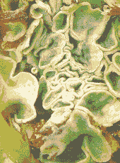
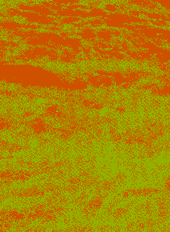
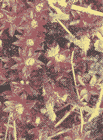
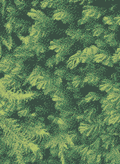
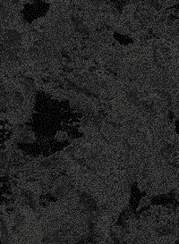
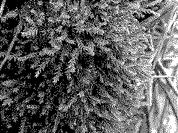
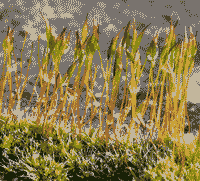

the impact of red deer management on Bryophyte and Lichen ecology in the northwest Highlands was the primary focus of my research at Letterewe. Letterewe is a privately-owned stalking estate comprising ca. 20,000 ha and is located north of Loch Maree in Wester Ross, Scotland. My supervisor, Mick Crawley, also encouraged me to compile some sort of bryophyte and lichen flora whilst I went roaming around the Estate, and to take lots of photographs. This website is the result of those endeavors, and there is an emphasis on giving the reader an idea of the bryophyte and lichen species they may encounter on a visit to Letterewe and elsewhere in the northwest Highlands. Journey around.
found by abby miller, on damp stonework near leaky drainpipe
Water and dissolved minerals are rapidly taken up across the whole plant surface in most bryophytes whose rhizoids serve primarily as a point of attachment.
found near the big boulder left of the fence.
very rare to find

occasional on the bark fo an old sycamore.
occasional in sheltered humid situations.
Commonly found on acid ground associated with western oakwoods.
On base rich rocks such as limestone.
On acidic rocks in fast flowing burns.
Occasional and locally common in humid woodland
occasional on wet crags and regularly irrigated vertical rock faces.
Locally common on boulders in ravines.
Occasional on base-rich crags.
Frequent on wet crafs and regularly irrigated in ravines.
Occasional amid rocks.
On bare acidic soil in woodland
Amid siliceous crags and rocky banks of burns where there is slight base enrichment and on limstone outcrops.
Locally common as a submerged moss around loch edges
Occasional on rocks in humid shelters
Occasional on rocks in humid shelters or wood ravines
Locally abundant in the upland heath and bog vegetation, acid grassland and woodland.
Recorded from shaded crevices.
Rare at Letterewe
Locally common with Philonotis Fontana in spring head habitats
Locally common in weedy habitats
Very common and locally abundant in wet heath vegetation
Rare at Letterwe and found in small quantity on calcareous rock outcrops
found by abby miller, on damp stonework near leaky drainpipe
Frequent on mossy-rocks and old walls.
When dry, leaves twist around the shoots giving the plants an appearance of tiny helter skelters.
Growing between paving slabs where soil has collected in the main courtyard.
Occasional where present as scattered cherry red shoots.
This was required for the vice county not having been recorded for centuries
Commonly on peaty ground and banks in wet heath vegetation.
Rare on peaty ground and banks in woodland and dry heath.
Collected from wet peaty ground.

Frequent on drained peaty ground where there has been disturbance.
Occasional on bare peaty ground subject to disturbance such as at the edge of cracks.
Occcasional on north facing slopes.
Occasional on well drained, acid peaty ground.
Occasional in open but damp woodland situations where there is mineral enrichment.
Occasional and locally common amond peat-covered rocks, subject to periodic unundation at the edge of lochs.
This species, associated with bare ground below late-lying snow was recorded from a'mhaighedean by derek ratcliffe in 1956
Collected from wet peaty ground.
Water and dissolved minerals are rapidly taken up across the whole plant surface in most bryophytes whose rhizoids serve primarily as a point of attachment.
Occasional on bare peaty ground subject to disturbance such as at the edge of tracks.
Occasionalon north facing slopes.
Occasionakl on well drained acid peaty ground.

Occasionaklin open but damp woodland situations.
Occasional and locally common on and among peat-covered rocks.
Found among trees.
Common on peaty grounds .
found by abby miller, on damp stonework near leaky drainpipe
A small patch was recorde dfrom a sheltered crag below an overhang.
A small patch was found on an old wall below crag in a shaded area of woodland.
Locally abundant.
Frequent member of spring heads, acidic flushes and at the edges of burns with species such as Philonotis Fontana. It grows in eye-catching bright yellow-green cushions and turf.
recorded frome dges of burns in the upland heath on damp sandy substrate.
Frequent on bare well drained acid grounds and banks in woodland and heath.
Rare on damp ground.
Rare. Found in boggy area of wet heath with pools.
Occasional, found in shelterd locations amid boulders and crags on north facing slopes.
Locally frequent amid oceanic heath vegetation on north facing slopes in the hills..
Scattered cushions growing on old wooden chairs in the main lodge garden.
Occasional cushions found in flushed situations where the is base-enrichment.
Common on acidic boulders in a matrix of wet heath vegetation and on acidic bark of oaks and birches in woodland and ravines.
Water and dissolved minerals are rapidly taken up across the whole plant surface in most bryophytes whose rhizoids serve primarily as a point of attachment.
Very common in sheltered humid situations on acid ground with other bryophytes associated with western oakwoods.
Widespread and common on acidic boulders.

Most recently found on acidic rock face in woodland close to the edge of loch maree.
Growing on thin soil over paving slab in courtyard area.

Occasional and locally common on stonework.
Occasional on damp mortar such as on trig points and in old walls.
Recorded from a base rich stream bank.
Recorded from base rich stream bank where there is tufa deposits in vicinity of old limestones quarry in a ravine.
Occasional on peaty soil collected on rock ledges and vertical acid earth banks.
A lime-loving moss that is rare at Letterewe.
Recorded from turf at the base of calcareous crags.
Recorded from turf at the base of calcareous crags.
Locally common on bare gravelly soil of heath banks along tracks.

Recorded from thin, stony soil on Siloch during the 2013 BBS field meeting.
Locally common on bare gravelly soil of heath banks along tracks.
Occasional on limestone outcrops and damp mortar of old walls.
Locally frequent on damp peaty banks at the edge of rivers and burns in sheltered ravine situations.

Widespread on damp peaty bank.
Collected from a calcareous crag where there was tufa formation in the Port an Aoil.
Locally common the ground and growing over other substrates.
Frequent in flushed situations at the edge of lochs and in ravines an on frequently irrigated crags.
On bare, acidic soil in woodland.
Frequent in generally drier situations amid siliceious crags and rocky banks of burns where there is a slight base enrichment and limestones.
Occasional on damp crags and rock faces where there is base base-enrichment.
Occasional amid rock and on earth banks in woodland.
Locally common as a submerged moss around loch edges.
Grows submerged in fast moving burns.It differs from the previous species in the absence of keels and leaves.
Occasional on tracks and bare ground where there has recently been a fire.
Occasional on rocks in humid sheltered situations such as wooded ravines. Unusualy, it was recorded from the bark of an old oak limb at Ardair.
Frequent on loch edge boulders and rock outcrops as well as crags where there is some base-enrichment.
Occasional on mossy boulders at the edge of lochs and in wooded, open ravines.

This was required for the Vice county since a specimen had not been inspected by the moss referee for decades.
Small cushions of this moss grows on baserich stonework of The Stonemans.
Locallly common on boulders in ravines and in the splash zone of rocks.
Occasional on base-rich crags and ledges that receive periodic irrigation.
Occasional on siliceous rocks in open situations, growing as cushions or loose turfs.
Locally common on shaded acid ground close to upland burns and at the edges of the river in ravines.
Common and locally abundant on acid bark of trees such as alders and oaks in woodland, and boulder tops in the upland heath.
Occasional on mossy turf amid block-scree on north-facing slope and summit turf of mountains.
Common on rocks and trees in woodland and heath.
Locally abundant in the upland heath and bog vegetation, acid grassland and woodland.
Recorded from shaded crevices of rock growing with species such as amphidium mougeottii that require slight base-enrichment.
Locally common at the base of trees and on rocks where there is some base-enrichment in sheltered woodland.

Recored by Ben Avdris in 1989. This is a moss of rocks and tree roots in powerful burns and river, often close to waterfalls.
Frequent at the base of sheltered crags and rocks in the upland heath.
Recorded friom a rock in wet heath on a north-facing slope.
Recorded by David Long in 1986 from the Beinn Tarsuinn and Sgúrr Dubh mountain area.
Recorded from rock outcrops close to late-lying snow.
Locally common in shaded situations such as inside the museum on the damp stone floor and on the ground in woodland lawns.
Locally abundant inside the greenhoude each summer and particularly fond of tomato growth media.
Occasional in the wet heath and locally frequent in the woods and soil. Often found growing as large compact glaucous-green cushions
Occasional on the ground in humid woodland where ther is some base-enrichment.
Common in woodland and sheltered situations in the upland heath such as in hollows under boulders and at the base of crags below overhangs.
Occasional on gungy humus which experiences a steady trickle over base-enriched vertical rock.
The flattened, fan like shoots of this moss where occasionally found sticking out from tree-bark and base-rich crags sheltered situations.
This robust and shiny moss was found growing from base-rich crags in teh hill country and calcareous rockfaces in wooded ravines.
Common on siliceious rocks and boulders with other bryophytes.
Recored during the 2013 BBS field meeting from the Siloch vicinity.
Locally frequent on rock-faces in wooded ravines and sheltered, humid situations at the base of crags.
Occcasional on the bark of old sycamore and ash trees in the policy and base-rich walls and crags elswhere.
Occasional in sheltered humid situations on acid ground with other bryophytes associated with western oakwoods and in shaded hollows beneath boulders in the upland heath.
On acid rock with some abse-enrichment in larger burns where regularly irrigated by fast-flowing water.
On base-rich rock such as limestone and concrete in burns where frequently irrigated.
On acidic rocks in fast-flowing burns.
Occcasional and locally common in humid woodland near ravines and damp heaths of north-facing slopes.
Abundant moos of woodland floor, ehath and grassland.
Occasional on wet crags and regularly irrigated vertical rock faces in ravines where there is base-enrichment or the rock is limestone.
Frequent on gravelly tracks throughout and in disturbed bare ground higher up in the mountains.
Rare. Found beside a burn on base-enriched soil in birch woodland during the BBS 2013 field meeting.
Rare but occasionally encountered when searching the calcareous crags that face north. The shoots of this nationally scarce moss are a rewarding red colour.
Water and dissolved minerals are rapidly taken up across the whole plant surface in most bryophytes whose rhizoids serve primarily as a point of attachment.
Found on old stonework in the garden at the main lodge.
Found on old stonework in the garden at the main lodge.
Found on a loch edge rock.
Found growing on mature oak bark in woodland along the edge of Loch Mareee.
Found growing on mature oak bark in woodland along the edge of Loch Maree.
Occasional on sheltered base-enriched rock faces and soil banks at teh edge of burns in ravines.
Locally abundant in calcareous sprinheads, flushes and at the base of crags where there is bsae-rich seepage.
Water and dissolved minerals are rapidly taken up across the whole plant surface in most bryophytes whose rhizoids serve primarily as a point of attachment.
Rare- this nationally scarce moss was found during a search of base-rich crags where there was steepage.
A common species of flushed ground, dripping rock-faces, springheads, rocks and banks associated with burns and loch edges.
Rare- this uncommon moss was found in montane springheads and flushes.
Recorded by David Long in 1986 from the Beinn Tarsuinn and Sgùrr Dubh mountain area.
Rare- found growing at teh base of an elm tree in ravine/former limestone quarry.
Locally frequent on wet ground in woodland and occasionally at the base of dripping crags.
Recorded from a hollow beneath a boulder in heathland on the north facing slope of Siloch.
Occasional on shaded banks and at the base of trees among boulders in the hill country.
Common in upland heath vegetation and on acid ground in woodland.
Occasional on rocks in burns where there is some base-enrichment water.
Very common moss of woodland floor, heath and acid grassland.
Locally common on abre, gravelly soil of heathy-banks along trakc, above burns and upturned tree root-plates.
Locally common moss disturbed gravelly ground at the edges of burns, tracks and bank of heathland..
Occasional in damp trackside and burn-edge habitats where there is regular disturbance.
Occasional in damp trackside and burn edge habitats where there is regular disturbance.
Occasional in shaded recesses and rock ledges of crags and mountains.
Locally frequent in damp trackside and burn-edge habitats where there is regular disturbance.
Occasional on sheltered rock ledges of crags in the mountains.
Occasional on dry peaty banks and peat collected on top of boulders.
Most recently recorded from a montane sprinhead on Beinn Lair, where locally abundant.
Occasional on rock-faces in ravines where there is seepage and also crags.
Locallly common on mountain summits growing from bare ground where there are gaps in the cover..
Common on the well-drained acid ground in the Atlantic oak woodland.
Recordedby David Long in 1986 from the Beinn Tarsuinn and Sgùrr Dubh mountain area.
Common moss of wet acidic ground and ditches in woodland.
Occasional on disturbed acid ground in exposed situations such as on soil gathered on top of old walls.
Common on rocks and boulders where gritty soil has collected.
Recordedby David Long in 1986 from the Beinn Tarsuinn and Sgùrr Dubh mountain area.
Recordedby David Long in 1986 from the Beinn Tarsuinn and Sgùrr Dubh mountain area.
Rare in upland flushes with some base-enrichment.
Rare. Recorded from a mountain gully on downstream facet of medium-sized rock.
Frequent in acid grassland, dry heath and on the ground in open woodland.
Occasional. Found on alder bark at the edge of Loch Maree where subject to periodic inundation and loch edge rocks elswhere.
Locally frequent in damp heath particularly on north-facing slopes.
Locally frequent on old walls and rock woodland along the edge of loch maree.
Common on rocks in burns and at the edge of lochs where periodically submerged.
Collected from rock in the vicinity of ravines and in the splash zone of a loch edge.
Historical records before this group was split.
From sheltered rock eldge of north-facing crags in humid situations.
Frequent on dampo ground at the base of dripping crags and at the foot of loch edge banks in the uplands and wet soil in wooded ravines.
Recorded from shaded stonewrok enar the main lodge.
Common and locally abundant moss of acid woodland floor.
Frequent in grassy places on freely drained acid ground and most abundant in the lawns around the main lodge.
Frequent on the ground in Atlantic oak woodland.
Variety of habitats including base-enriched rocks at loch maree but not common at Letterewe.

Occasional in neutral flushes and springheads in teh upland heath.
Occasional in base-enriched flushes.
frequently on base-enriched siliceous rock near water.
Recorded by David Long in 1986 from the Beinn Tarsuinn and Sgùrr Dubh mountain area.
Occasional on rocks in often powerful rivers.
Occasional on base-enriched siliceous rock and crags.
Exctinct.
Occasional on periodically irrigated north-facing crags and wet rock faces in ravines.
Occasional on disturbed gravelly ground.
Very common on acid rocks and old walls.
Common on siliceous rocks and boulders in a matrix of wet heath.
Abundant moss of the mountain summits where it can be the most dominant plant.
Common on rocks and boulders at higher elevations.
Recorded from crevices in acid rocks of shaded, humid ravine habitats.
Recorded from shaded stonework near the main lodge.
Common on rocks in burn and at the edge of lochs where periodically submerged.

On stone in grassland near main lodge.
Occasional in calcareous flushes.
Frequently in base-enriched flushes.
Frequently in slightly base-enriched flushed ground in the upland heath.
Rare- found in small quantity in a crevice of limestone rock in a ravine near a waterfall in former limestone quarry.
A small population recored from a gentle flush bog.
Found near limestone quarry.
A voucher specimen of this moss was confirmed by Spaghnum referee Mark Hill.
Very common in damp heatland below a canopy of Calluna vulgaris.

Frequent on thin, bare wet peat in ditches and at the edge of track in wet heath vegetation.
Rare. In flushed marshy ground where there is much base-enrichment.

common in acid bog pools.
Common in acid bog pools, ditches and runnels in wet heath vegetation.
Frequent on very wet peaty ground and shallow pools in wet heath and then locally abundant in sometimes quite extensive lawns.
Recorded during the BBS 2013 field meeting.
Common among crags and bog pools.
Frequent on wet ground and at the edge of flushes where there is some base-enrichment in wet heath vegetation.
Occasional in well-established boggy ground where there are noticable hummocks and hollows.
Common in wet heath, grassland and woodland where there is slight movement of water.
WCommon in bogs around pool edges and at the edge of flsuhed ground in wet heath vegetation.
Common on north-facing slopes in oceanic heath vegetation and on freely-drained ground in cionifer plantations.
Occasional on flushed north-facing rocky slopes beneath a canopy of Calluna vulgaris.
Occasional recorded from swampy ground amid rushes in woodland and around springheads and flushes in the wet heath where there is reasonable mineral enrichment.
Occasional in the wet heath on rocky slopes subject to frequent rainfall.
Common in damper areas of wet heath and acid grassland in the hills, usually marking some slight base-enrichment around flushes or failry recent distrubance to the peaty ground that has slightyl increased base status.
Common bare and very acid wet peat of distrubed ground in bogs and wet heath.
Rare and in small quantity from just two base-rich flushes.
Rare and in small quantity from just two base-rich flushes.
Rare and in small quantity on red deer dung in damp wet heath vegetetation.
Frequent coprophyte of red deer dung in damp wet heath vegetation.
Recorded during the 2013 BBS field meeting.
Recorded during the 2013 BBS field meeting.
A plant of rotten stumps and old peaty banks in woodland.
Occasional on fox scat deposited on rocks in the upland heath.
Most recently found from a very shaded sheltered humid location.
Occasional on stonework of bridges and rocks that get periodically irrigated by burns in shaded locations.
Occasional on shaded banks in humid woodland close to ravines, in damp grassland below crags.
Common in damp grassland, on the grounbd and about tree bases in woodland an occasional in wet heath.
Recorded from siliceous rock on a steep rocky slope during the BBS 2013 field meeting.
Frequent on soil and rocks where there is base-enrichment and on calcareous crags and limestone outcrops.
On stonework around the buildings at Letterewe.
On damp sany soil amid gravel on the track outside the dairy.
Frequent on crags and rock-faces and rocky banks at the edge of bruns and lochs where there is some base-enrichment.
Lcoally frequent amid base-rich crafs and ledges - especially in the vicinity of the old limestone quarry.
Frequent on crags adn rock-faces and rocky banks at the edge of burns and lochs.
Frequent on the branches of trees in woodland and occasionally on isoltaed trees in sheltered locations of the upland heath.
Recored during the BBS 1986 field meeting.
Occasional on the branches of trees in woodland and on isolated trees in sheltered locations of the upland heath.
Rare- most recently recorded during the BBS 2013 field meeting.
Frequent on mossy boulders at the edges of lochs and rarely on tree bark close to Loch Maree.
Frequent on tree bark in the woodlan along the edge of Loch Maree and in the ravines.
Most recently recorded during the BBS 2013 field meeting.
Recorded from gravelly soil at the edge of a track below the metal Strath hill gate an on bare soil on a bank in the old limestone quarry.
Collected from old tree bark in a wooded ravine and recorded from trees near the Letterewe falls.
Growing as an occasional epiphyte and also collected from damp brickwork around the main lodge before succumbing to over-zealous gardening in this habitat.